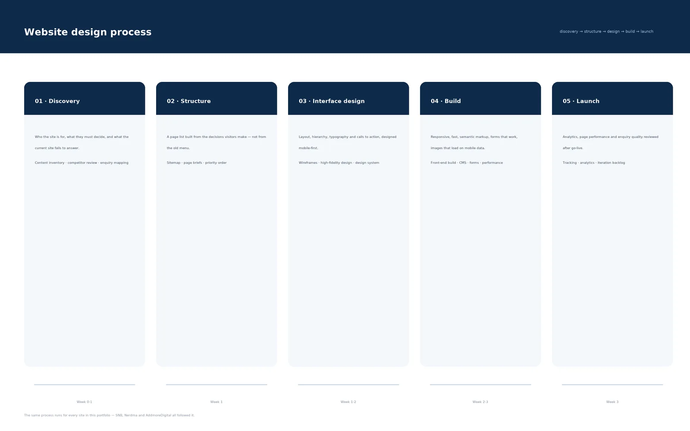

Enterprise safety reporting platform
Replaced a spreadsheet-based safety process with a live platform adopted across five-plus departments.
The problem
Safety incidents were recorded in a fragmented, Excel-based process. Departments consolidated the data by hand, and leadership had no real-time view of exposure.
My role and boundaries
- Designed and built the Angular frontend with RxJS and REST API integration.
- Mapped the three-tier reporting hierarchy and the NISS severity logic into the interface.
- Tested each release against NISS severity edge cases before rollout, closing the loop from design through QA without a dedicated tester.
- Established the UX governance standards that became the baseline for later digital safety tools.
Three decisions and what I traded away
Model the hierarchy in the UI, not in a spreadsheet
The three-tier reporting structure is enforced by the interface so a report cannot be filed at the wrong level.
Rejected: Free-form category fields with validation after submission.
Trade-off accepted: Less flexibility for edge-case departments that did not fit the hierarchy.
Severity logic as data, tested per edge case
NISS severity is calculated from configuration and tested against edge cases before each release.
Rejected: Hard-coded severity rules in components.
Trade-off accepted: Configuration changes need a release and a QA pass, which slows urgent changes.